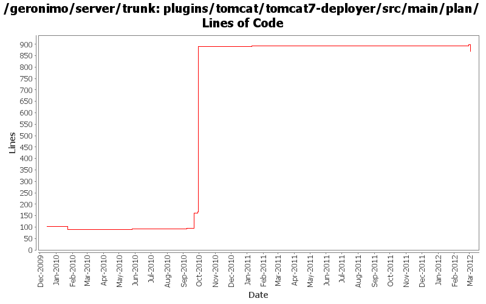

[root]/plugins/tomcat/tomcat7-deployer/src/main/plan

| Author | Changes | Lines of Code | Lines per Change |
|---|---|---|---|
| Totals | 11 (100.0%) | 811 (100.0%) | 73.7 |
| djencks | 5 (45.5%) | 794 (97.9%) | 158.8 |
| xuhaihong | 3 (27.3%) | 10 (1.2%) | 3.3 |
| genspring | 1 (9.1%) | 4 (0.5%) | 4.0 |
| vamsic007 | 1 (9.1%) | 3 (0.4%) | 3.0 |
| gawor | 1 (9.1%) | 0 (0.0%) | 0.0 |
GERONIMO-6292 Share the japser servlet between jasper plugin and web-container plugin.
0 lines of code changed in 1 file:
GERONIMO-6290 Explicitly import javax.servlet packages
5 lines of code changed in 1 file:
GERONIMO-5096 adding initial wink integration code. Though tck are 100% passed locally, we need add following
1, scan jaxrs resouces based on annotation.
2, exposing EJB as service support.
3, exposing OWB bean as service support.
according to Spec.
Current tck cases only cover pojo with Application configured in web.xml.
4 lines of code changed in 1 file:
GERONIMO-5624 better default web app merging, and make jetty use more of the info tree
724 lines of code changed in 1 file:
Use default values according to Tomcat's default web.xml
5 lines of code changed in 1 file:
GERONIMO-5624 use info tree for tomcat web app deployment
67 lines of code changed in 1 file:
GERONIMO-5222 Add support for application validation descriptor support for deployed applications
o Support for web applications
o ModuleBuilderExtension to add ValidatorFactoryGBean.
o Hook the module builder extension to tomcat builder.
3 lines of code changed in 1 file:
GERONIMO-5177 introduce sub-modules to allow deploying ejbs, rars, etc as parts of wars, ejbs, clients, etc. First draft
3 lines of code changed in 1 file:
some environment information i forgot to put back
0 lines of code changed in 1 file:
extirpate more tomcat6 references
0 lines of code changed in 2 files: